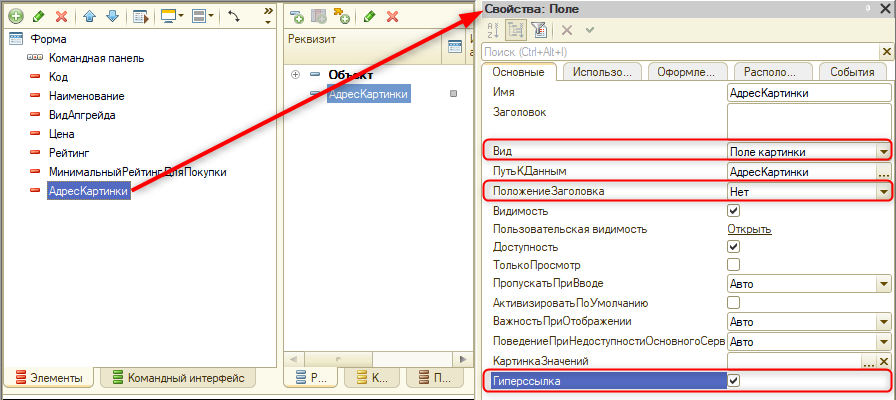
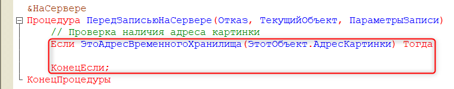
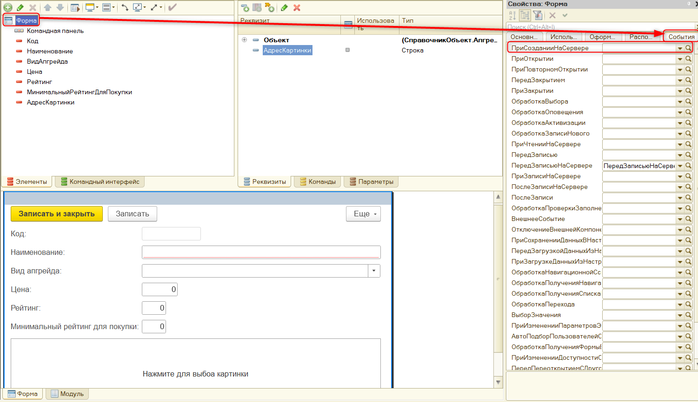

|
Данный реквизит не отображается на форме элемента справочника из-за его типа данных, так как "Хранилище значения" содержит в себе двоичные данные о файлах, хранящихся в системе. |
Тема занятия – прикрепление картинок к апгрейдам. Картинки нужны для того, чтобы пользователь видел на начальном экране все приобретенные им апгрейды. Такое отображение удобнее всего сделать с помощью картинок.
В рамках этого занятия нам потребуется выполнить 2 задачи:
Прикрепить картинки можно с помощью специального типа данных – "ХранилищеЗначения". Данный тип позволяет хранить различные файлы, например, картинки, текстовые документы, сканы формата PDF и тому подобное.
В рамках первой задачи необходимо реализовать механизм хранения только файлов формата PNG, JPEG, GIF и BNP.
Добавим в справочник "Апгрейды" новый реквизит "Картинка", тип данных – "ХранилищеЗначения" (рис. 10.1).
Рис. 10.1. Добавление реквизита "Картинка"
|
Данный реквизит не отображается на форме элемента справочника из-за его типа данных, так как "Хранилище значения" содержит в себе двоичные данные о файлах, хранящихся в системе. |
Для отображения картинки потребуется создать элемент формы, который будет связан с реквизитом формы.
Создадим новую форму. Перейдем на вкладку "Формы" и добавим новую форму элемента справочника (рис. 10.2).
Рис. 10.2. Добавление новой формы элемента справочника
Для отображения картинки необходимо сослаться на файл, то есть получить ссылку на запись картинки в базе данных и отобразить ее в виде изображения. Ссылка состоит из букв и цифр, поэтому для ее хранения будет использоваться тип данных "строка".
Добавим реквизит формы и назовем его "АдресКартинки", тип данных – "строка", длина – 0. Данный реквизит будет существовать только в рамках этой формы (рис. 10.3).
Рис. 10.3. Добавление реквизита формы
Добавим реквизит на форму, зажав его левой кнопкой мыши (рис. 10.4).
Рис. 10.4. Добавление реквизита на форму
Для нового элемента укажем вид – "Поле картинки", а также уберем заголовок и поставим галочку напротив свойства "Гиперссылка", благодаря чему появится возможность нажимать на элемент формы (рис. 10.5).

Рис. 10.5. Настройка поля "АдресКартинки"
Пользователь должен выбирать картинку путем нажатия на поле. Чтобы пользователю был понятен процесс, перейдем в палитре свойств на вкладку "Использование" и в свойстве "ТекстНевыбраннойКартинки" напишем "Нажмите для выбора картинки" (рис. 10.6).
Рис. 10.6. Добавление надписи для невыбранной картинки
Для красивого и пропорционального отображения картинок изменим размер картинки. Перейдем на вкладку "Оформление" и укажем в свойстве "РазмерКартинки" – "Пропорционально" (рис. 10.7).
Рис. 10.7. Установка размера картинки
Вторая задача заключается в том, чтобы запрограммировать реакцию программы на событие "Нажатие". Перейдем на вкладку "События" и добавим обработчик события "Нажатие". Определим событие "На клиенте" и нажмем на кнопку "ОК" (рис. 10.8).
Рис. 10.8. Добавление события
|
Если создать событие сразу в модуле формы, а не через палитру свойств, то оно не сработает, так не будет установлена связь между обработчиком и самим событием элемента формы. |
У данного обработчика есть параметр "СтандартнаяОбработка", который выдает пользователю сообщение о том, что произошло в ходе выполнения действия. Данное сообщение выводить не требуется, поэтому установим значение параметра "СтандартнаяОбработка" – "Ложь".
Чтобы прикрепить изображение, воспользуемся специальной процедурой, которая называется "НачатьПомещениеФайла".
|
При попытке ввести название данной процедуры с помощью подсказки ничего не произойдет, так как данный метод считается устаревшим. |
В текущей ситуации этот обработчик является самым удобным. Кроме того, он уже использовался в прошлом. Запишем название процедуры вручную.
Описание данного метода можно найти в документации, нажав по нему правой кнопкой мыши и выбрав пункт "Поиск в Синтакс-помощнике". Из описания следует, что в процедуре необходимо определить параметр "ОписаниеОповещениеОЗавершении". Он указывает, какая процедура должна сработать после завершения помещения файла. Для этого необходимо предварительно определить специальную конструкцию "Оповещение".
Далее необходимо указать, какая процедура будет использоваться для обработки файла и где она будет вызываться. Назовем данную процедуру "ОбработатьВыборФайла".
"ОбработатьВыборФайла" – это название экспортной процедуры, которая будет проверять, какой файл прикрепляется, и будет давать отказ от записи в случае выбора пользователем неподходящего файла.
В качестве второго параметра укажем модуль, в котором будет срабатывать данная процедура, а именно модуль, в котором сейчас идет написание кода.
Вернемся к методу "НачатьПомещениеФайла" и укажем параметры.
Первый параметр – это описание оповещения "Оповещение". Пропустим второй и третий параметры, так как это имя и адрес картинки, информации о которых сейчас нет. Четвертый параметр – это интерактивность, укажем значение – "Истина". Благодаря этому нам нет нужды указывать второй параметр, так как мы не знаем заранее путь к файлу, который выберет пользователь.
Параметр "УникальныйИдентификатор" означает, что все происходит внутри данной формы – если пользователь закроет форму и не зафиксирует запись картинки в базе данных, то картинка исчезнет.
Создадим экспортную процедуру "ОбработатьВыборФайла", которая вызывается для анализа файла. Она должна быть экспортной, поскольку этого требует формат создания оповещения.
Согласно документации, у процедуры должны быть определенные параметры. Добавим процедуре параметры "Результат", "Адрес", "ПомещаемыйФайл" и "ДополнительныеПараметры".
Необходимо проверять расширение выбранного файла. Если расширение файла не PNG, JPEG, GIF или BNP, тогда пользователь получит ошибку. Удобнее всего получить расширение от "Файл".
Файл – это специальный тип данных, который содержит в себе информацию о файле. |
Создадим новую переменную "Файл", тип данных – "файл". В качестве параметра укажем "ПомещаемыйФайл".
Теперь можно считать расширение файла. Создадим новую переменную "Расширение". Для дальнейшего анализа расширения воспользуемся функцией "ВРег", чтобы все символы стали заглавными.
Реализуем проверку расширения. Используем следующее условие:

Необходимо проверить, выбрался ли файл. Если файл не был выбран, то необходимо прервать выполнение процедуры. За это отвечает параметр "Результат".
После того, как нужный файл с подходящим расширением был выбран, запишем адрес временного хранения файла в реквизит формы, так как связанный с ним элемент позволит увидеть эту картинку.
Для того чтобы пользователь, закрывая форму, получал сообщение с вопросом о сохранении изменений, необходимо добавить признак модифицированности для формы.
Так картинка отобразится на форме, однако она не будет храниться в базе данных. Для сохранения картинки в базу данных необходимо сделать запись в реквизит объекта справочника. Реализуем две процедуры: для записи и для чтения данных.
Определим новый обработчик на форме. В палитре свойств формы перейдем на вкладку "События" и выберем событие "ПередЗаписьюНаСервере" (рис. 10.9).
Рис. 10.9. Создание обработчика на форме
В этом обработчике необходимо проверять, что реквизит формы "АдресКартинки" является адресом ко временному хранилищу, в котором находится картинка. Выполнять проверку необходимо до закрытия формы. Если во временном хранилище действительно есть адрес картинки, тогда ее необходимо сохранить в информационную базу.
Создадим условие, которое будет проверять наличие адреса файла.

Запишем адрес картинки в отдельную переменную.
Подготовим уровень сжатия данных. Запишем его в отдельную переменную.
Последнее, что нужно сделать, – это записать данные картинки в справочник. Для этого воспользуемся параметром процедуры "ТекущийОбъект". В данном случае мы записываем двоичные данные файла напрямую в реквизит объекта, так как доступ к реквизитам с типом "ХранилищеЗначения" со стороны формы ("ЭтотОбъект") невозможна.
Теперь картинка сохраняется в базе. Однако при открытии формы необходимо ее считывать, чтобы пользователь увидел картинку. Для этого добавим еще один обработчик формы.
На вкладке "События" в палитре свойств формы определим новый обработчик события "ПриСозданииНаСервере" (рис. 10.10).

Рис. 10.10. Создание обработчика "ПриСозданииНаСервере"
Данный обработчик будет считывать навигационную ссылку на картинку, чтобы отобразить ее в реквизите "АдресКартинки".
В результате получилось 4 процедуры. "ПриСозданииНаСервере" и "ПередЗаписьюНаСервере" – это события формы. Клиентская экспортная процедура "ОбработатьВыборФайла" была создана вручную. "АдресКартинкиНажатие" – это обработчик события.
Обновим конфигурацию базы данных и запустим пользовательский режим.
Откроем справочник "Апгрейды" и выберем любой апгрейд. Например, "Один кассир", далее добавим картинку для данного апгрейда. Нажмем на кнопку "Записать и закрыть". Теперь при открытии формы данного элемента в ней всегда будет данная картинка (рис. 10.11).
Рис. 10.11. Итоговый вариант карточки справочника "Апгрейды"
На этом десятое занятие окончено!
На этом занятии мы реализовали механизм, благодаря которому игрок теперь сможет прикреплять картинки для создаваемых им апгрейдов.
На следующем занятии мы займемся доработкой формы начальной страницы.
Это нужно запомнить |
|
|
Реквизиты с типом "Хранилище значения" не отображается на форме элемента справочника из-за его типа данных, так как они содержит в себе двоичные данные о файлах, хранящихся в системе. Параметр "ОписаниеОповещениеОЗавершении" метода "НачатьПомещениеФайла()" указывает, какая процедура должна быть выполнена после завершения помещения файла. Файл – это специальный тип данных, который содержит в себе информацию о файле. |